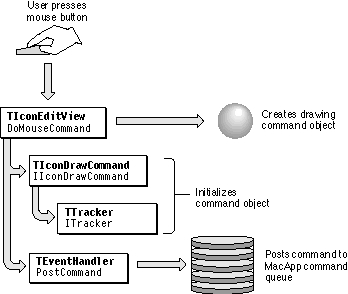
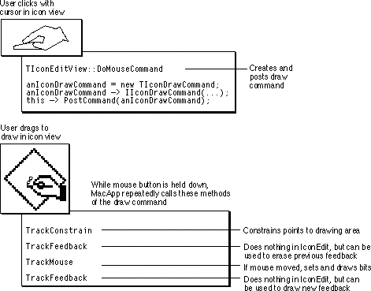

Mouse Handling
Almost all applications need to track mouse movement and respond to mouse clicks. When a user moves the mouse or presses or releases the mouse button, MacApp receives a Toolbox event from the operating system describing the action. In some cases, MacApp handles the event for you; in others, it passes the event on to your code. For example, MacApp takes care of a mouse click in the Apple menu, but your application handles the event when a user clicks in the content area of your window.Mouse actions in a window's content area are commonly used for activities such as drawing, selecting, and dragging. An application may need to track the mouse while the user drags, then take some action when the user releases the mouse button. MacApp supplies the
TTrackerclass to help your application track the mouse and provide visual feedback.
- Note
- This chapter uses the term mouse event primarily to describe the Toolbox mouse-down event that is generated when a user clicks with the mouse. Most applications are less interested in mouse-up events, although MacApp provides facilities for working with them as well.
Which Objects Can Handle a Mouse Event
Any object based on a class that descends fromTViewcan handle a mouse event by overriding theDoMouseCommandmethod. Any object instantiated from a class that descends fromTBehaviorcan also override theDoMouseCommandmethod. So your application can handle mouse events directly in subclasses ofTViewandTWindow, or by adding a behavior to an object based on theTEventHandlerclass. Mouse events are most commonly handled by view objects or by behavior objects attached to them.Dispatching Mouse Events
"View Hierarchy Dispatching" on page 103 describes how MacApp dispatches mouse events to objects in your application. In summary, MacApp dispatches a mouse event by calling theHandleMouseDownmethod of the window in which the event occurs. The window normally gives its subviews a chance to handle the event, and a subview may do the same for its subviews. A mouse event is usually handled in theDoMouseCommandmethod of the most deeply nested view that contains the mouse event and is visible and enabled to respond to it.Creating a Command to Handle a Mouse Event
A view object'sDoMouseCommandmethod commonly handles a mouse event by creating a mouse-tracking command object and posting it to the command queue. The tracking command is instantiated fromTTrackeror a subclass. TheTTrackerclass adds mouse-tracking capability to command objects.To handle drawing, selecting, or dragging with the mouse, you can define a subclass of the
TTrackercommand and override theTrackConstrain,TrackFeedback, andTrackMousemethods. For selecting with the mouse, you also override theDoHighlightSelectionmethod of the view object in which the selecting takes place.Chapter 15, "Working With the Mouse," provides recipes and code samples for working with the mouse.
Selecting With the Mouse
Your application may allow the user to select some or all of the items displayed in a view. To handle selection, you create and post a selection command based on a subclass ofTTracker. Your selection command needs to detect when the user attempts to select something, determine what was selected, mark it in the view by highlighting it, and mark it as selected in your data structure. To do so, it implements aTrackMousemethod that examines the mouse point and looks through any visible items in the view to determine whether a selection action has taken place.MacApp's
TTEViewclass (page 246) handles text selection automatically.Dragging With the Mouse
Many applications allow the user to drag selected objects to reposition them within a view. Implementing simple dragging within a view is similar to implementing selecting with the mouse. You define a dragger class that is a subclass ofTTracker. You override methods such asTrackMouse,TrackConstrain, andTrackFeedbackto manage the movement of the object on the screen and to make changes to your view or document to reflect the changed position of the object. You may need to override theDrawandDoHighlightSelectionmethods in your view class to check whether dragging is currently in process, because those methods may act differently during dragging.MacApp also supports drag and drop based on the Macintosh Drag Manager. Drag Manager support allows a user to drag information within a view, between views in an application, and between applications. MacApp's drag-and-drop support is described in Chapter 9, "Drag and Drop."
Drawing With the Mouse
When the user clicks while the cursor image is over your view, MacApp calls theHandleMouseDownmethod of the window object that contains your view. If the mouse event is in the window's frame or controls, the window'sHandleMouseDownmethod performs the required action, such as closing or zooming the window.If the mouse event is in the content area of the window, the window object's
HandleMouseDownmethod callsInherited, which invokes theHandleMouseDownmethod ofTView. That method iterates over the views in the window's view hierarchy, calling theDoMouseCommandmethod. To handle drawing with the mouse, your view class overrides theDoMouseCommandmethod to create and post a drawing-command object. As with commands for selecting and dragging with the mouse, your drawing command should be a subclass ofTTracker.Figure 8-6 shows how a drawing command is created in the IconEdit sample application. For a code sample that implements drawing with the mouse, see "Recipe--Implementing a Recordable Drawing Command," beginning on page 375.
Figure 8-6 Creating a drawing command

The Tracking Sequence
While the mouse button is held down, MacApp calls the three mouse-tracking methods of the drawing command object, in this order:TrackConstrain,TrackFeedback,TrackMouse, andTrackFeedback(a second time).Note that MacApp makes these four method calls in a continuous loop until the mouse button is released. You should minimize the processing you do in these methods so that if the user moves the mouse quickly, the mouse won't get ahead of the feedback you are providing.
Note also that while the mouse button remains down, the
TrackFeedbackmethod is called twice for each call toTrackMouse: once to erase the previous feedback and then again to draw it in the new location.Figure 8-7 shows the flow of control during mouse tracking and drawing in the IconEdit application. The command is created in the
DoMouseCommandmethod of aTIconEditViewobject. As the user continues to draw, holding the mouse button down, theTrackConstrain,TrackFeedback,TrackMouse, andTrackFeedbackmethods are called repeatedly.Figure 8-7 Drawing with the mouse in the IconEdit sample application

The last thing the
TrackMousemethod does is to return a reference to the drawing command it is part of. This tells MacApp to continue using this command. You could create a new command each time through the mouse-tracking loop, but it's more efficient to reuse the same command.When the mouse button is finally released, MacApp calls two methods for the last time:
TrackFeedbackto erase feedback andTrackMouseto record the final position of the mouse.If your drawing command's initialization method calls the
ITrackermethod, passing a reference to the scroller for the view in which drawing takes place, the command will automatically support autoscrolling. For more information, see "Autoscrolling" on page 220.The TrackConstrain Method
A user can move the cursor image anywhere on the screen during drawing. You shouldn't try to constrain cursor movement, but your application can constrain feedback to a particular area, using theTrackConstrainmethod of your drawing command. For example, views in the IconEdit sample application have a border area in which drawing is not allowed. TheTrackConstrainmethod of IconEdit's drawing command constrains drawing to the content area of the window, adjusted for the border area.The TrackFeedback Method
TheTrackFeedbackmethod allows your application to provide simple feedback while the user drags. TheTrackFeedbackmethod of theTTrackercommand class calls theTrackFeedbackmethod of the view where the cursor is being tracked. The defaultTrackFeedbackmethod for theTViewclass draws a gray rectangle from the point where the mouse button was pressed to the current cursor location. This feedback is sufficient for some drawing operations.To supply specialized drawing feedback in your application, you can override
TrackFeedbackin your drawing view. If you just want to disable the default gray rectangle (as IconEdit does), you can overrideTrackFeedbackwith an empty implementation in either your drawing command or your drawing view.The TrackMouse Method
TheTrackMousemethod tracks cursor location and mouse state, including the current phase of mouse tracking: either the mouse button has just been pressed, the user is dragging, or the mouse button has just been released. Depending on your application, theTrackMousemethod of your drawing command may need to determine whether the user is drawing or dragging, supply more complicated feedback than the default gray rectangle supplied byTView, or perform other processing while the user drags.Undoing Drawing
If you support drawing with the mouse, your drawing command should support the Undo menu item. Your command object inherits theDoIt,UndoIt, andRedoItmethods fromTTracker. You can override these methods to perform a command action when the tracker has finished tracking, then undo or redo the action. However, that approach is not compatible with scripting and recording. A better approach is to have the tracker command send an Apple event to perform the command action, as shown in "Recipe--Implementing a Recordable Drawing Command," beginning on page 375. A still more robust approach is to have the tracker command post a separate, recordable command to perform the command action.